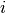
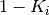

mr.unsupervised.lcaSpikingWoodsAnalytical¶
lcaSpikingWoodsAnalytical provides an analytical (non-SPICE) implementation of the simple spiking architecture.
The Simple, Spiking, Locally Competitive Algorithm (SSLCA) consists of rows with a set voltage (either or depending on input spike activity) and columns that contain a capacitor which is directly connected to the crossbar.
The design can be broken down into two versions:
Non-Inhibiting Version¶
When inhibition is not a factor, the behavior is exactly as described above: a capacitor directly on the crossbar either charges or discharges through the rows. When that capacitor reaches a threshold voltage, all capacitors are reset, and the process continues. Mathematically, this can be viewed as the sum of each row’s current into the node:
Then, assuming an input row  spikes to voltage with a mean of activity (on for , off for ), and is grounded the rest of the time, this becomes:
Solving that equation for  , letting , assuming the network has
, letting , assuming the network has  inputs, and that there is a distribution that matches the empirical data set that the network is exposed to, then the network may be specified by assuming that the network is fully trained with a matching element for each input:
inputs, and that there is a distribution that matches the empirical data set that the network is exposed to, then the network may be specified by assuming that the network is fully trained with a matching element for each input:
Thus, the anticipated fire time (desired spikes per second) can be calibrated based on the desired capacitance and threshold voltage. Alternatively, by using the product of two different distributions instead of the square of a single for , , a ratio of firing times may be calibrated based on .
Inhibiting Version¶
The inhibiting version has an identical layout to the non-inhibiting version. However, it has more complicated row and column headers. The CMOS layout is as follows:
If, in the Inhibition Logic Module (ILM), , then the non-inhibiting architecture is realized. However, if the ILM is implemented as above, then:
Derivation¶
Note
Later derivation shows that the below math is only useful through .
![\text{As with uninhibited, a row has $K_i$ spike activity.} \span\\
\text{Tracking the inhibition voltage $V_{i}$ (pre/post is relative to spike):} \span\\
A &= \frac{1}{R_{cb}C}, \\
B &= \frac{1}{RC}, \\
V_{i,max} &= V_{cc}\frac{R}{R + R_{cb}}, \\
V_{i,pre} &= V_{i,0} e^{-TB}, \\
V_{i,post} &= V_{i,max} + (V_{i,pre} - V_{i,max})e^{-T_{spike}A}. \\
\text{Making the assumption that spike activity is nullified when:} \span\\
V_i &> V_{i,thresh}, \\
\text{Then the time that spike activity is nullified is:} \span\\
V_{i,thresh} &= V_{i,0} e^{-T_{run}B}, \\
T_{inhib} &= \frac{-ln(\frac{V_{i,thresh}}{V_{i,0}})}{B}\text{, bounded on $[0, \infty)$}. \\
\text{Since $V_{i,post}$ can be calculated, the effective block time added by } \span\\
\text{a spiking event can be calculated by taking the difference of $T$ values.} \span\\
\text{If we want constant inhibition, then $V_{post}$ after $V_{pre}$ needs to be $V_{i,0}$:} \span\\
V_{i,0} &= V_{i,max} + (V_{i,0}e^{-T_{run}B} - V_{i,max})e^{-T_{spike}A}, \\
T_{run} &= \frac{-ln\left( \frac{V_{i,0} - V_{i,max} + V_{i,max}e^{-T_{spike}A}}{V_{i,0}e^{-T_{spike}A}} \right)}{B}. \\
\text{Back to the $K_i$ business, an inhibited network will have $K_i = 0$ for $T < T_{inhib}$.} \span\\
\text{In a $1\times 1$ network, this means that the fire time will be delayed by $T_{inhib}$:} \span\\
T_{run} &= \frac{-C}{Q_1}ln\left( 1 - V_{neuron}(t)\frac{Q_1}{Q_2} \right) + max\left(0, \frac{-ln(\frac{V_{i,thresh}}{V_{i,0}})}{B}\right), \\
\text{Subsituting in the original design parameters: } \span\\
T_{run} &= T_{planned} + max\left( 0, \frac{-ln(\frac{V_{i,thresh}}{V_{i,0}})}{B} \right). \\
\text{$T_{run}$ is now the actual time between spikes; the frequency is thus $\frac{1}{T_{run} + T_{spike}}$.} \span\\
\text{Substituting the $V_{i,0}$ stability equation into the $1\times 1$ equation yields: }\span\\
\frac{V_{i,0} - V_{i,max} + V_{i,max}e^{-T_{spike}A}}{V_{i,0}e^{-T_{spike}A}} &= e^{-B\left[ ln(e^{T_{planned}}) + min\left(0, ln\left( \frac{V_{i,thresh}}{V_{i,0}} \right) \right) \right]} \\
&= \begin{cases}
e^{-BT_{planned}} & \text{if } V_{i,thresh} \ge V_{i,0} \\
\left(\frac{V_{i,thresh}}{V_{i,0}}\right)^{-B}e^{-BT_{planned}} & \text{otherwise}
\end{cases}](../../_images/math/d07be05adefbfcc0e1fa6d45dca2b8409140212c.png)
Note
This is old, and probably bad
Consider now a niche problem for investigating this architecture:
- There are two dictionary elements with M inputs
- The first element has M-1 elements at max weight (other at K_{min})
- The second element has only the last element at K_B weight (others at K_{min})
- The input is a solid bar of K_{in} weight
Thus the ratio of firing should work out to 1:K/B between the two elements if inhibition is doing its job. Essentially, we will run the analytical algorithm to determine the actual firing ratio.
(1)![\text{Column parameters denoted as $A\{Q_1\}$ and $B\{Q_1\}$, for instance.} \span\\
A\{Q_1\} &= G_{max}(M - 1 + K_{min}), \\
A\{Q_2\} &= V_{set}K_{max}G_{max}K_{in}(M - 1 + K_{min}), \\
B\{Q_1\} &= G_{max}((M - 1)K_{min} + K_B), \\
B\{Q_2\} &= V_{set}K_{max}G_{max}K_{in}((M - 1)K_{min} + K_B), \\
\text{For sensitivity, $V_{fire} = 0.9\frac{B\{Q_1\}}{B\{Q_2\}}$}, \span\\
Q_1 &= MG_{max}K_{in}, \\
Q_2 &= MV_{set}K_{max}G_{max}K_{in}^2, \\
C &= \frac{-T_{planned}MG_{max}K_{in}}{ln\left(1 - V_{fire}\frac{Q_1}{Q_2}\right)}. \\
\text{We have two distinct input inhibition states: $V_{i,A}$ and $V_{i,B}$.} \span\\
\text{At each step, re-compute all $Q_2$ according to inhibition terms.} \span\\
\text{Measure times: $T_{inhib,A}$, $T_{inhib,B}$, $t_{fire,A}$, $t_{fire,B}$.} \span\\
\text{Take the smallest time, re-up $V_{i,A}$, $V_{i,B}$, $V_A$, $V_B$.} \span\\
\text{Rinse and repeat to 20 spike events.} \span](../../_images/math/2eab7636a2b449ee00ca512ea771260002c90d02.png)
Now, inhibition works best when it’s linear: the charge through the crossbar is exponential between the current inhibition and VCC. The drain is from a max value of VCC down to ground. Therefore, the optimal inhibition threshold is , as the midpoint is the most linear range of an exponential for both towards VCC and towards ground.
The most important design decisions for inhibition are R and C. Too large of an R produces good results, but makes the network run for far too long. Too large of a C can cause performance issues as well. The goal is to balance these for accuracy against speed; it is imperative that the network still process quickly.
Thus, design for uninhibited network:
- Choose the minimal RF of interest, calculate
 .
. - Choose the average RF of interest, calculate
 .
. - Calculate based on
 .
. - Choose the desired run-time length of algorithm, spike density, and spike resolution.
- Calculate
 based on these parameters and .
based on these parameters and .
For an inhibited network (implemented as LcaSpikingWoodsAnalyticalInhibition._init()):
Choose the minimal RF of interest, calculate
.Choose the average RF of interest, calculate
.Calculate based on
(, where  is a scaling factor. Currently
is a scaling factor. Currently  ).
).Choose the desired input spike maximum density, input spike period, output spike maximum density, and output spike period; , respectively.
Calculate , the maximum neuron capacitance (not accounting for inhibition) based on and the time between output spikes . This will use (1).
- Modify that to make room for inhibition effects, and manipulate
 such that the average RF will fire at the correct interval. This is accomplished as follows:
such that the average RF will fire at the correct interval. This is accomplished as follows: Want asymptotic, stable fire time; the reconstruction is accurate for an input when , the time it takes for an output neuron to charge and begin to fire, is balanced with the inhibitory forces created during the firing event:
From (1), can solve for with :
![K_i &= K_{maxIn}k_i, \\
A &= \frac{1}{R_{cb}C_{inhib}}, \\
R_{cb} &= \text{Memristive device resistance}, \\
B &= \frac{1}{R_{inhib}C_{inhib}}, \\
V_{i,0} &= \frac{V_{cc}\left( 1 - e^{-T_{spikeOut}A} \right)}{1 - e^{-K_iT_{spikeOutGap}B - T_{spikeOut}A}}, \\
V_{i,thresh} &= V_{i,0}e^{-K_iT_{spikeGapOutInhib}B}, \\
V_{i,thresh} &= \frac{V_{cc}}{2} \text{(to try to stay linear)}, \\
V_{i,0} &= \frac{V_{cc}}{2e^{-K_iT_{spikeGapOutInhib}B}}, \\
\frac{V_{cc}}{2e^{-K_iT_{spikeGapOutInhib}B}}
&= \frac{V_{cc}\left( 1 - e^{-T_{spikeOut}A} \right)}{1 - e^{-K_iT_{spikeGapOut}B - T_{spikeOut}A}}.](../../_images/math/516c57b204b4507c59726b117fc759d439474d21.png)
Since all parameters except for
are known, the above non-linear equation can be used to solve for whichever of the two is unspecified. Empirical testing has shown that since fire time and neuron capacitance have a linear relationship, halving the neuron’s capacitance and using the same value for is reasonable, though there might be a better approach.
- Modify that to make room for inhibition effects, and manipulate
Members¶
-
class
mr.unsupervised.lcaSpikingWoodsAnalytical.LcaSpikingWoodsAnalytical(nOutputs=10, **kwargs)¶ Bases:
mr.modelBase.SklearnModelBaseAn analytical (not ODE-simulated) version of LcaSpikingWoods.
-
_bufferIn¶ _bufferIn: ‘__Pyx_memviewslice’
-
_bufferOut¶ _bufferOut: ‘__Pyx_memviewslice’
-
_calcFireTime(self, double voltage, double condSum, double condKProduct)¶ Fire time:
t = -C / Q1 * ln(1 - Q1 / Q2 * Vnode) Q1 = sum(cond) Q2 = Vevent * sum(k*cond)
Returns (vMax, fireTime), where fireTime is -1 if never fires
-
_calcVFire_error(self, vFire, double uQ1, double uQ2, double tQ1, double tQ2) → double¶
-
_calcVFromC(self, double C) → double¶
-
_checkDatasets(self, X, y, noYIsOk=False, isInit=False)¶ Checks input / output arrays X and y to make sure they have two dimensions and can be indexed via [].
Raises a ValueError if the parameter is invalid.
Parameters: isInit – If True, then self.nInputs and self.nOutputs will be set after this method is called, and those checks will be skipped.
-
_crossbar¶ _crossbar: ‘__Pyx_memviewslice’
-
_debug¶ _debug: ‘int’
-
_eG2¶ _eG2: ‘__Pyx_memviewslice’
-
_edX¶ _edX: ‘__Pyx_memviewslice’
-
_getCond(self, double weight) → double¶
-
_get_param_names(type cls)¶ Stolen from scipy.base.BaseEstimator.
-
_homeostasis¶ _homeostasis: ‘__Pyx_memviewslice’
-
_init(self, int nInputs, int nOutputs)¶
-
_isInit¶ _isInit: ‘int’
-
_learnMoments¶ _learnMoments: ‘__Pyx_memviewslice’
-
_partial_fit(self, __Pyx_memviewslice x, __Pyx_memviewslice y)¶
-
_predict(self, __Pyx_memviewslice x, __Pyx_memviewslice y)¶
-
_reconstruct(self, __Pyx_memviewslice y, __Pyx_memviewslice r)¶
-
_resetDebug(self, debug, int lenX)¶ We’re about to do some operations on input array X. Set up the debugInfo_ struct if self.debug is set.
-
_sampleK_test(self, double k, double tWindow, double tSpike) → double¶ Returns _sampleK, in python form
-
adaDeltaRho¶ adaDeltaRho: ‘double’
-
avgInput¶ avgInput: ‘double’
-
calcFireTimes(self, states)¶ Populates states with normalized fire times.
- states - [ lambda, ... ] where each lambda returns two values: a [0, 1]
- weight in the learned dictionary element, and a [0, 1] k value for the input.
returns a list of dicts with avgWeight, avgInput, avgCond, avgCondK, and normalized fireRate, where 1.0 = on target (simTime / nSpikes), 2.0 is twice as fast, etc.
-
circuit_rMax¶ circuit_rMax: ‘double’
-
circuit_rMin¶ circuit_rMin: ‘double’
-
convergerProps(self)¶
-
debugInfo_¶ debugInfo_: mr.modelBase.SklearnModelBaseStats
-
drainAll¶ drainAll: ‘bool’
-
fit(self, X, y=None, maxIters=0, solveTime=0.0, debug=False)¶ Initializes this predictor’s learned values so that they fit the dimensionality of X, and trains the predictor on X.
- maxIters [int, default 0] - The maximum number of iterations to train
- on.
- solveTime - For smaller datasets, it probably makes sense to run fit()
- across the dataset multiple times by default. solveTime specifies, in seconds, the amount of time that an UnsupervisedPredictor is allowed to use on trying to better output by multiple partial_fits.
-
fit_predict(self, X, y=None)¶
-
get_params(self, deep=True)¶
-
inhib¶ inhib: dict
-
init(self, nInputs, nOutputs)¶ nInputs and nOutputs comes from data, so init() comes after constructor. Note that nInputs and nOutputs as passed to this function do not necessarily override the actual nInputs and nOutputs.
Calls self._init(self.nInputs, self.nOutputs).
-
learnMomentum¶ learnMomentum: ‘double’
-
nHomeo¶ nHomeo: ‘int’
-
nInputs¶ nInputs: ‘int’
-
nOutputs¶ nOutputs: ‘int’
-
nOutputsConvolved¶ The number of outputs that are convolved; this is used purely for visualizing a network.
-
nSpikes¶ nSpikes: ‘double’
-
partial_fit(self, X, y=None, debug=False)¶
-
predict(self, X, debug=False)¶ Given X, calculate our output values Y (which can be thought of as the strengths of different clusters / classification elements)
-
reconstruct(self, X)¶ Reconstruct each member of X and return the reconstructions
-
reconstructFromPredict(self, y)¶ Reconstruct each member of the original X given a result from predict().
-
score(self, X, y=None, debug=False)¶ Returns the mean-squared-error for the distance from the reconstruction of X to X, divided by the number of elements in X.
-
set_params(self, **params)¶
-
simTime¶ simTime: ‘double’
-
spikeDensity¶ spikeDensity: ‘double’
-
tolerance_vFire¶ tolerance_vFire: ‘double’
-
untrainedK¶ untrainedK: ‘double’
-
vEventSet¶ vEventSet: ‘double’
-
visualize(self, params, path=None, inputs=None)¶ Dumps an image at path, based on the visual params (width, height, channels). Essentially, gives the input map that is the most likely estimator to produce a single output.
- inputs [None] - Inputs suitable for self.predict. Determines the
- inputs to visualize
-
-
class
mr.unsupervised.lcaSpikingWoodsAnalytical.LcaSpikingWoodsAnalyticalInhibition(nOutputs=10, rfLeast=None, rfAvg=None, **kwargs)¶ Bases:
mr.modelBase.SklearnModelBaseSee the module documentation for the design of this class. Takes two receptive fields, one the “most receptive” and another the “least receptive” and generates a network that does sparse approximation correctly.
Example usage:
physics = dict(phys_rMax=183e3, phys_rMin=53e3) lca = LcaSpikingWoodsAnalyticalInhibition( np.r_[ np.ones(90), np.zeros(10) ], np.r_[ np.ones(10), np.zeros(90) ], **physics)
-
_bufferIn¶ _bufferIn: ‘__Pyx_memviewslice’
-
_bufferOut¶ _bufferOut: ‘__Pyx_memviewslice’
-
_checkDatasets(self, X, y, noYIsOk=False, isInit=False)¶ Checks input / output arrays X and y to make sure they have two dimensions and can be indexed via [].
Raises a ValueError if the parameter is invalid.
Parameters: isInit – If True, then self.nInputs and self.nOutputs will be set after this method is called, and those checks will be skipped.
-
_debug¶ _debug: ‘int’
-
_get_param_names(type cls)¶ Stolen from scipy.base.BaseEstimator.
-
_init(self, int nInputs, int nOutputs)¶ Responsible for setting up a new instance of this network. This function performs the design steps for an inhibited network mentioned in Inhibiting Version.
-
_init_getQ(self, __Pyx_memviewslice rf)¶ For a given
rf, returns (Q1, Q2).
-
_init_solveForR(self, double C, double k, double g, double Q1, double Q2) → double¶
-
_init_solveForR_inner(self, __Pyx_memviewslice R0, double C_i, double k, double g, double T_fire) → double¶ Since a viable RC pair is difficult to compute analytically, this method’s roots are the solutions to (self.cInhib_, R) that optimize the inhibition response in this network.
Parameters: - R0 – The guess from scipy.optimize.
- C_i – The inhibition capacitance to use.
- k – The actual input k to use
- g – The stored crossbar value to represent k.
- T_fire – The time calculation based on Q1 and Q2 for the neuron being balanced.
-
_isInit¶ _isInit: ‘int’
-
_lcaInternal_crossbar¶ _lcaInternal_crossbar: ‘__Pyx_memviewslice’
-
_partial_fit(self, __Pyx_memviewslice x, __Pyx_memviewslice y)¶
-
_predict(self, __Pyx_memviewslice x, __Pyx_memviewslice y)¶
-
_rand¶ _rand: mr.util.FastRandom
-
_reconstruct(self, __Pyx_memviewslice y, __Pyx_memviewslice r)¶
-
_resetDebug(self, debug, int lenX)¶ We’re about to do some operations on input array X. Set up the debugInfo_ struct if self.debug is set.
-
algInputKMax¶ algInputKMax: ‘double’
-
algInputWidth¶ algInputWidth: ‘double’
-
algOutputKMax¶ algOutputKMax: ‘double’
-
algSpikes¶ algSpikes: ‘double’
-
algTimePerSpike¶ algTimePerSpike: ‘double’
-
crossbar_¶ Returns or sets the crossbar used for sparse representation.
-
debugInfo_¶ debugInfo_: mr.modelBase.SklearnModelBaseStats
-
fit(self, X, y=None, maxIters=0, solveTime=0.0, debug=False)¶ Initializes this predictor’s learned values so that they fit the dimensionality of X, and trains the predictor on X.
- maxIters [int, default 0] - The maximum number of iterations to train
- on.
- solveTime - For smaller datasets, it probably makes sense to run fit()
- across the dataset multiple times by default. solveTime specifies, in seconds, the amount of time that an UnsupervisedPredictor is allowed to use on trying to better output by multiple partial_fits.
-
fit_predict(self, X, y=None)¶
-
get_params(self, deep=True)¶
-
init(self, nInputs, nOutputs)¶ nInputs and nOutputs comes from data, so init() comes after constructor. Note that nInputs and nOutputs as passed to this function do not necessarily override the actual nInputs and nOutputs.
Calls self._init(self.nInputs, self.nOutputs).
-
nInputs¶ nInputs: ‘int’
-
nOutputs¶ nOutputs: ‘int’
-
nOutputsConvolved¶ The number of outputs that are convolved; this is used purely for visualizing a network.
-
partial_fit(self, X, y=None, debug=False)¶
-
phys_rMax¶ phys_rMax: ‘double’
-
phys_rMin¶ phys_rMin: ‘double’
-
phys_vcc¶ phys_vcc: ‘double’
-
predict(self, X, debug=False)¶ Given X, calculate our output values Y (which can be thought of as the strengths of different clusters / classification elements)
-
reconstruct(self, X)¶ Reconstruct each member of X and return the reconstructions
-
reconstructFromPredict(self, y)¶ Reconstruct each member of the original X given a result from predict().
-
rfAvg¶ rfAvg: object
-
rfLeast¶ rfLeast: object
-
score(self, X, y=None, debug=False)¶ Returns the mean-squared-error for the distance from the reconstruction of X to X, divided by the number of elements in X.
-
set_params(self, **params)¶
-
visualize(self, params, path=None, inputs=None)¶ Dumps an image at path, based on the visual params (width, height, channels). Essentially, gives the input map that is the most likely estimator to produce a single output.
- inputs [None] - Inputs suitable for self.predict. Determines the
- inputs to visualize
-